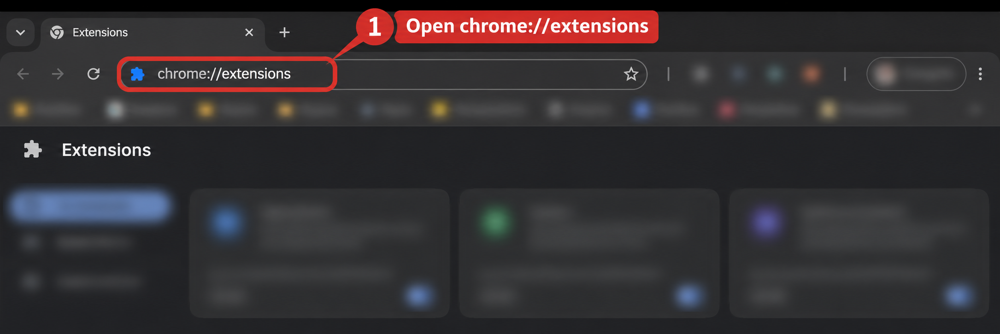
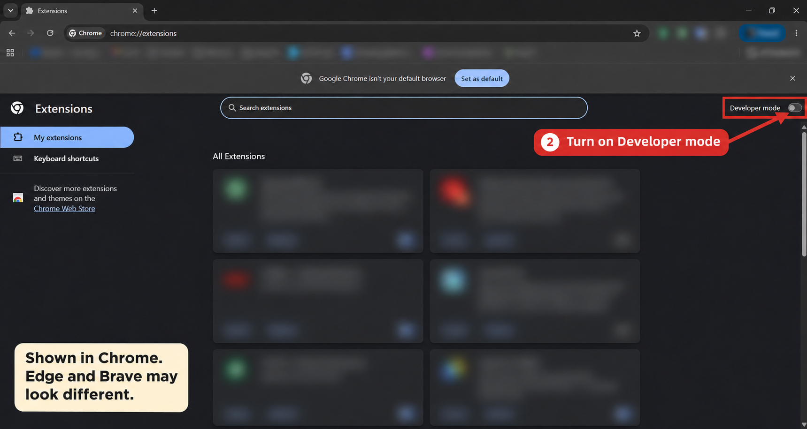
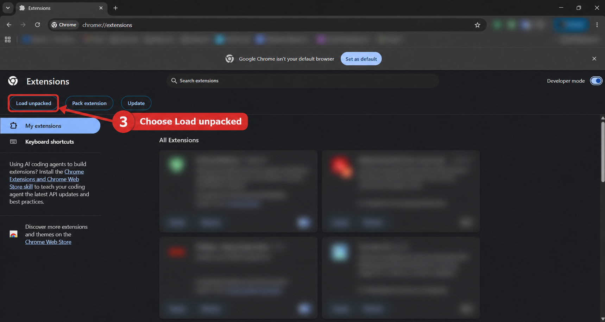
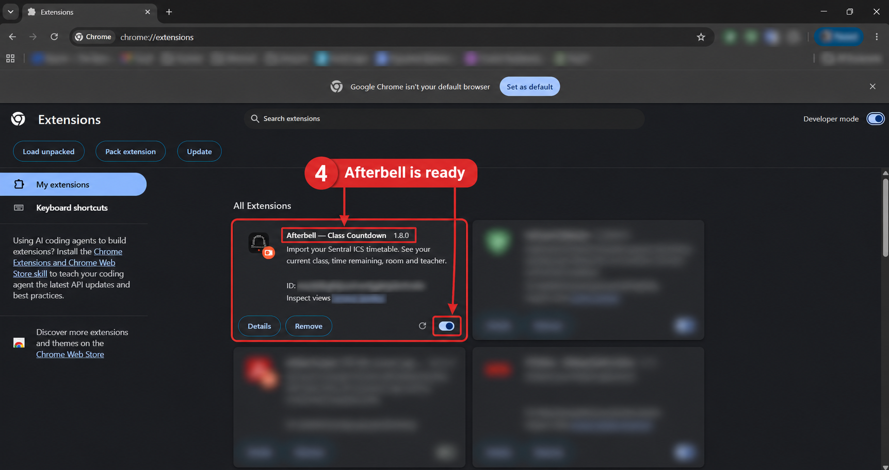

Time left
Live countdowns for classes, recess and lunch. See your school-day progress with period markers and an optional percentage. After the last lesson, see that your day is done. The next-class countdown starts one hour before the lesson.
1240
See what's next, and when the bell goes.
Import your Sentral timetable to see your current class, room and time left.
EXTENSION BETA V1.10.1 / WEB ALPHA V1.10.1
11:00 to 12:00
Room T04 / Ms Taylor
You need a school that uses Sentral and lets you export your timetable as an ICS file.
Use the web app on a phone, iPad or computer, or install the Chrome extension on desktop. Import your timetable on each device.
Live countdowns for classes, recess and lunch. See your school-day progress with period markers and an optional percentage. After the last lesson, see that your day is done. The next-class countdown starts one hour before the lesson.
Class, room, teacher and period together, using the details included in your timetable. Browse another date in a click.
Pick your clock, fonts, colours and background. Preview your changes, then Apply. Open a tab or go fullscreen.
Change the clock style, fonts, colours and background in Settings.
Export your timetable from your school's Sentral student portal as an ICS file.
Choose the file in Timetable. Review the preview and select Apply changes.
Afterbell works out your current and next class from the saved timetable and school time zone.
Timetable changed? Export and import a fresh file. Afterbell doesn't log in to Sentral or automatically receive room changes, substitutions or cancellations.
The extension runs locally. No accounts, analytics or network requests. Your timetable and preferences stay in this browser.
The web version is in alpha. No extension needed on phones or iPads. Import an ICS file, customise your countdown and add Afterbell to your home screen. Your data stays on that device. Keep the app open for live countdowns; background reminders require the desktop extension.
The desktop extension is in beta. Coming to the Chrome Web Store. For now, this version installs manually in desktop Chrome. Download the extension, extract the ZIP and keep the folder somewhere permanent.
Download Afterbell ↓chrome://extensions in Chrome. manifest.json.Updating? Replace the files in the same extension folder and click Reload in Chrome's extensions page to retain your saved settings.
Extract the downloaded ZIP first and keep its folder somewhere permanent. These steps show desktop Chrome. The Extensions page and buttons may look different in Edge or Brave. On phones and iPads, open the web app instead.
In desktop Chrome, type chrome://extensions into the address bar and press Enter.

Use the Developer mode switch at the top right of the Extensions page. These screenshots show Chrome; the page can look different in Edge or Brave.

Click Load unpacked. Choose the extracted Afterbell folder containing manifest.json, rather than the ZIP file.

Afterbell appears in your extensions list. Its switch should be on. Pin Afterbell using Chrome’s extensions menu, then open it and import your timetable.

Your school's Sentral portal may look different from these examples.
It is coming to the Chrome Web Store. Afterbell is currently in beta, and you can try it now using the manual installation above. A store release date has not been announced.
Try the student portal in a desktop browser and expand Timetable. If your school has disabled export, ask the school for an ICS timetable.
Between classes, Afterbell shows the next class. Use the date picker to check another day. If the export has ended, import a newer one.
Check the school time zone under Timetable and your computer's clock. Sydney is the default school time zone.
Afterbell supports individual dated events in an ICS export. Recurring calendars and all-day events are rejected with an explanation. Room and teacher details can only appear if your file includes them.
Your ICS file contains personal timetable information, so keep it private. Remove your timetable in Settings to clear its saved class data.